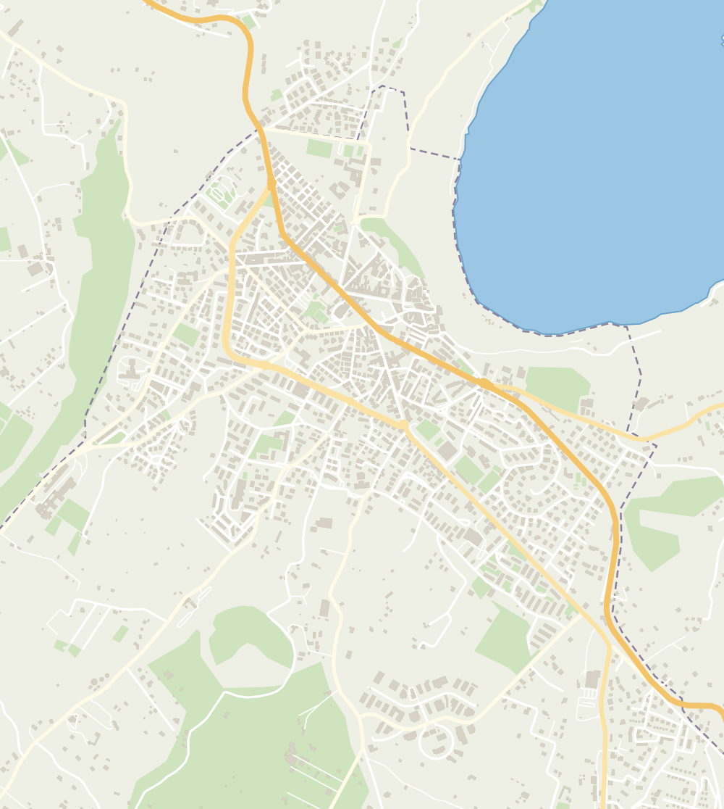

Genzano si prepara
Un gioco per tutti sulla mappa vera della nostra città: preparati, affronta l'evento, scopri che cosa la prevenzione ha evitato.

Genzano di Roma
Mappa: dati © OpenStreetMap (si apre in una nuova scheda) contributors (ODbL). Aree di attesa: Piano di emergenza comunale.
Caricamento del gioco
È una simulazione. I luoghi della mappa sono quelli veri di Genzano di Roma; gli eventi, la famiglia e i messaggi sono inventati. Le indicazioni di comportamento sono quelle delle pagine del sito sui rischi e la prevenzione.
Durante un'allerta vera segui il bollettino del Centro Funzionale della Regione Lazio sulla pagina Allerte meteo. In emergenza chiama il 112.
Elenco delle aree di attesa mostrate sulla mappa
Le aree di attesa sono i luoghi sicuri dove ritrovarsi dopo un terremoto o quando lo chiede il Comune. Dettagli e cartelli nella pagina Aree di attesa.